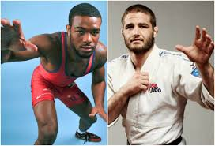
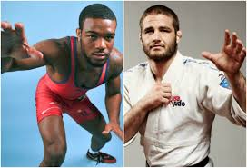

Wrestling & Judo
- Wrestling — particularly Kakhetian wrestling — is deeply rooted in Georgian culture and remains widely practiced. Georgia ranks highly in Olympic wrestling medal counts, only behind Russia and the US.
- Judo also enjoys great popularity, with stars like Guram Tushishvili, who won gold at the 2018 World Championship.
 
